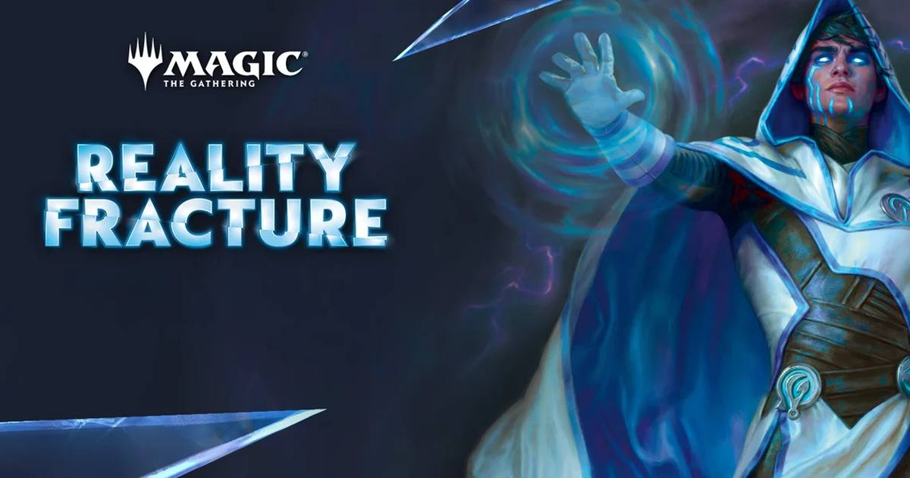

Fans Reject Universes Beyond in Rosewater's 2026 Set Poll
Reality Fracture won Mark Rosewater's fan poll of 2026 Magic sets in a landslide, while all four Universes Beyond sets combined barely matched the runner-up.

Disclosure: this post contains affiliate links. I earn a commission on qualifying purchases.
Magic players have spoken, and the message is loud: they want Magic to feel like Magic.
Reality Fracture won Mark Rosewater's end-of-year poll of 2026 sets on his Blogatog, taking 44.8% of the 2,695 votes cast. The next closest set, Secrets of Strixhaven, managed 15.9% — meaning the winner nearly tripled the runner-up. All four Universes Beyond sets combined barely cleared that runner-up's share.
The full results
Reality Fracture: 44.8%
Secrets of Strixhaven: 15.9%
Lorwyn Eclipsed: 15.1%
Star Trek: 4.3%
Teenage Mutant Ninja Turtles: 2.2%
The three in-universe sets swept the top three spots. The four crossovers — Teenage Mutant Ninja Turtles, Marvel Super Heroes, The Hobbit, and Star Trek — finished at the bottom of the ballot, combining for just over 15% between them. TMNT, the year's first crossover, finished dead last.
Why the winner won
Reality Fracture was the year's story set. Released October 2, it closed out the three-year Metronome arc with Jace Beleren's Echoverse — a "What If…?" take on the Multiverse where familiar characters and schools show up as twisted mirror versions of themselves. Every booster carried a character and their Echoverse counterpart, and Limited players have been praising the draft format since launch.
It was also the set fans had been asking Rosewater for for years. The "What If" concept was one of the most requested ideas in the game's history, and the design team built the whole set around making it work.
The vote matches the sales
This isn't just a poll of Blogatog regulars — the buying public agrees. Earlier this month, Rosewater revealed that the three in-universe sets of 2026 are the three top-selling in-universe sets of all time: Lorwyn Eclipsed, Secrets of Strixhaven, and Reality Fracture. Hasbro's third-quarter results added that Reality Fracture shipments exceeded expectations, with Magic revenue topping $600 million in a quarter for the first time.
That context matters because 2026 was the year Universes Beyond took over the calendar. Four of the year's seven premier sets were licensed crossovers — the most ever — and Hasbro CEO Chris Cocks has said the company is still in the "early innings" of the initiative, with crossovers planned out through the early 2030s. The poll doesn't change that strategy. But it does show the gap between what Wizards is selling and what its most engaged players actually love: the three sets built from Magic's own world took roughly 75% of the vote, and the four borrowed worlds split the rest.
The caveat is the sample. Blogatog is Rosewater's personal blog, and 2,695 votes is a small, self-selected slice of the player base — the kind of players who follow the head designer closely enough to vote in his poll. Still, the direction is hard to argue with: the set that leaned hardest into Magic's own lore won by nearly 30 points.
Watch
Source: Saying Goodbye to Reality Fracture (For Now) Ft. Marc! | LLU #261 — Limited Level-Ups. A farewell debrief on why Reality Fracture was so strong for Limited play, and what the hosts got wrong in their original set review.